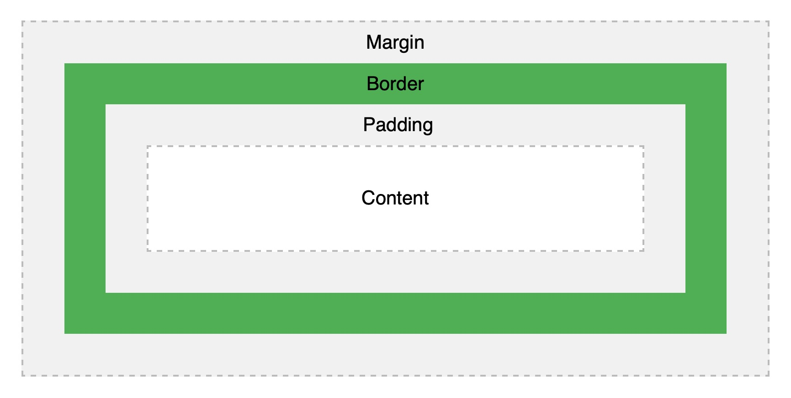

JavaScript BASICS
Sprint 3 Technical Blog
26 February 2020

Knowing the differences between Margins, Borders and Paddings can help improve your CSS knowledge to be a better designer.
"What is the difference between Margin, Border, and Padding?"
Margins are usually transparent and are used to create space around elements, outside of any defined borders.
All the margin properties can have the following values:
• auto - the browser calculates the margin
• length - specifies a margin in px, pt, cm, etc.
• % - specifies a margin in % of the width of the containing element
• inherit - specifies that the margin should be inherited from the parent element
On the other hand Borders allow you to specify the style, width, and colour of an element's border. You may see it in between margins and paddings.
Lastly Paddings are used to generate space around an element's content, inside of any defined borders. It can also have the same values similar to margin properties except for auto.
Image 1:an illustration of a box model that shows the correlation between CONTENTS, PADDING, BORDER and MARGINS
This can be compared to a fragile package for a quick analogy. The fragile item is the Content of the box which acts as the Margin. To make sure that there will be no problem in the delivery of the item we cover it a bubble wrap that can be compared to act as a Padding. And a